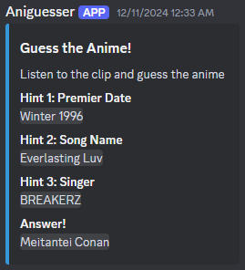

Aniguesser Bot
Summary
Aniguesser is a Discord bot I created to challenge users to guess the anime based on short clips of its opening or ending songs. Inspired by the repetitive and predictable nature of YouTube anime music quizzes, the bot dynamically generates unique challenges, offering a seemingly infinite library of song clips for a fresh and engaging experience.
Key Features
- Builds a cache of anime metadata by parsing MyAnimeList.net (MAL) using their API.
- Searches for anime songs based on user-defined parameters such as popularity, release year, or type (openings/endings).
- Streams randomly selected song clips directly to a Discord voice channel using preprocessed audio.
- Provides interactive Discord embeds with hints, MAL links, and the correct answer, ensuring an enjoyable user experience.

Extra hints and info along with the audio
Challenges
The MAL API's rate limiting posed a significant challenge when building the anime cache, as parsing the entire MAL library took days. To mitigate this, the parser was designed to save progress and avoid redundant work, allowing for efficient updates. Finding accurate audio matches on YouTube also required fine-tuned query handling to ensure the bot provided relevant and high-quality clips.
How It Works
The bot begins by initializing a cache of anime metadata, including potential opening and ending themes. When a user issues a command, the bot queries the cache based on parameters like anime rank, popularity, or release year to find a song. It then searches YouTube for a matching audio clip, downloads the closest match, preprocesses it with FFMPEG, and streams a short clip to the user’s Discord voice channel.
To enhance the experience, a Discord embed is sent alongside the audio, containing hidden information like the anime’s name, MAL page, and hints, which can be revealed at the user’s discretion.
Key Achievements
- Automated the generation of unique song-based challenges for anime fans.
- Optimized the parsing process to handle the massive MAL library efficiently.
- Streamlined the audio retrieval and streaming process for seamless user interaction.
Technologies Used
- Python - Core language for implementing the bot and data processing.
- FFMPEG - For audio preprocessing and streaming.
- Discord API - To integrate the bot with Discord servers and provide a rich interactive experience.
- Web Crawling - Used to build and maintain the anime metadata cache from MAL.
Resources
- Check out the project on GitHub.
- Download a pre-parsed cache of anime metadata for quick setup: Pre-Parsed Cache.